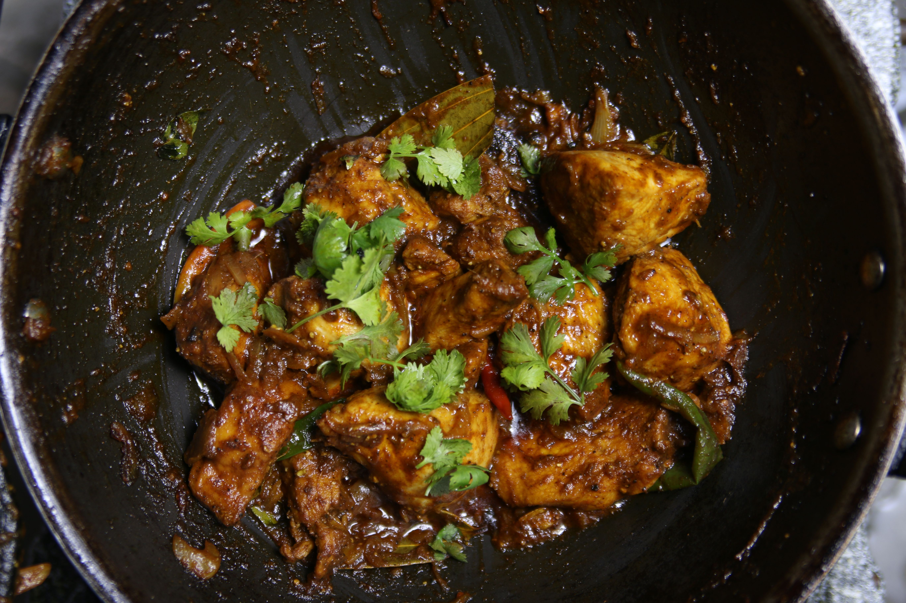

Home
Chicken Karhai Recipe

Description
Chicken Karhai is a popular Pakistani dish made with tender chicken cooked in a rich, spicy tomato-based sauce. It is traditionally prepared in a deep, wok-like pan called a karahi.
Flavoured with ginger, garlic, green chillies, and aromatic spices, this dish is best served hot with naan or roti. It is a delicious meal for anyone who enjoys bold, savoury flavours.
Ingredients
- 2 tbsp ghee
- 2–3 tbsp neutral oil, or substitute more ghee
- 1 small onion (approximately 150 g), chopped
- 8 garlic cloves, crushed
- 3/4 inch ginger
- 1–2 green chili peppers
- 2–2.2 lbs (approximately 907 g) skinless, bone-in chicken
- 8 small tomatoes (approximately 600 g), diced
- 2 tsp coriander powder
- 1 tsp cumin powder
- 1 tsp red chili powder, or to taste
- 2 tsp salt
- 1 tsp black peppercorns
- 1/2 tsp garam masala
- 2–3 green chili peppers, for garnish
- 1–2 tbsp fresh ginger, for garnish
- 1 tbsp fresh cilantro
Steps
- Heat ghee and oil in a large pan over high heat. Sauté onions for 5–6 minutes until lightly golden. Add garlic, ginger, and a whole green chili; cook for 1 minute.
- Add chicken and ½ tsp salt. Sauté for 5 minutes until the chicken changes colour and stops releasing water. Add tomatoes, coriander, cumin, chili powder, and remaining salt. Cook for 1 minute.
- Reduce heat to medium, cover, and cook for 20 minutes, stirring halfway through.
- Uncover and increase heat to high. Sauté for 10 minutes until the chicken is cooked and excess liquid has reduced.
- Reduce heat to medium. Stir in freshly ground black pepper and garam masala. Garnish with green chilies, julienned ginger, and cilantro. Serve hot with roti, naan, bread, or rice.